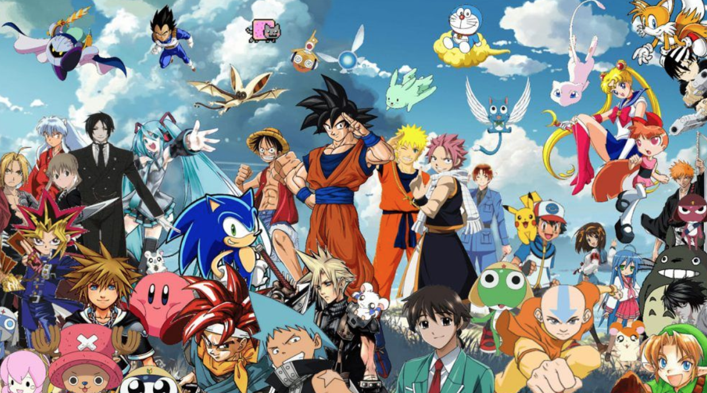
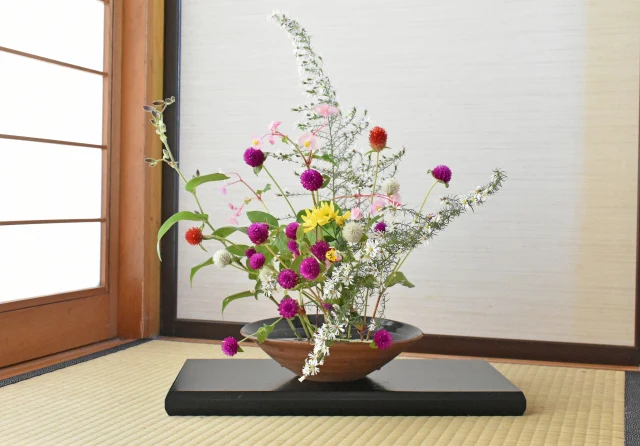
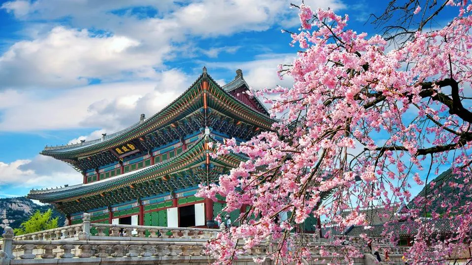

Japan is a fascinating blend of ancient traditions and cutting-edge innovation. Mount Fuji offers stunning views, and hiking to the summit is a memorable experience. Kyoto is famous for its temples, shrines, and beautiful gardens, preserving much of Japan's historical charm. Tokyo Tower, an iconic symbol of the city, provides panoramic views of Tokyo and is a great spot to experience the city's blend of modernity and tradition.
Japan is renowned for its advancements in technology, blending tradition with innovation to become one of the most technologically advanced nations in the world. Here’s a detailed look at Japan’s contributions to technology

Japan is a global leader in robotics, developing both industrial and humanoid robots.
japan's journey into robotics began in the mid-20th century.
the need to rebuild its economy after World War II.
types of robotics
Automation in manufacturing, assembly lines, and quality control.
designed for research, assistance, and interaction.
Robots are commonly used in healthcare, hospitality, and retail.

Anime and Manga
Anime and manga are a significant part of Japanese pop culture. Anime refers to animated TV shows or movies, while manga are comics or graphic novels. Popular series like Naruto, One Piece, and Attack on Titan have gained international acclaim.

Traditional Arts
Japan is home to traditional arts such as tea ceremonies, ikebana (flower arranging), and kabuki theater. These arts reflect the country's appreciation for beauty, simplicity, and harmony.

Cherry Blossoms
Every spring, Japan's cherry blossoms (sakura) captivate locals and tourists alike. The custom of enjoying the blossoms, called hanami, involves picnics under the blooming trees.
